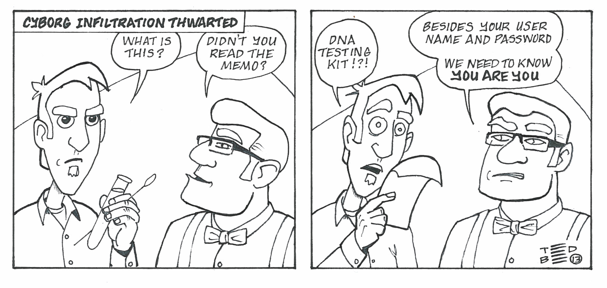
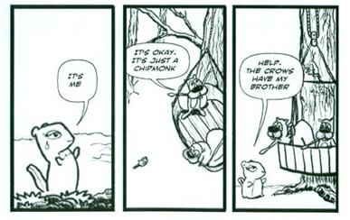
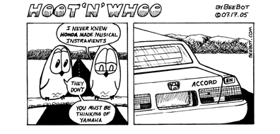
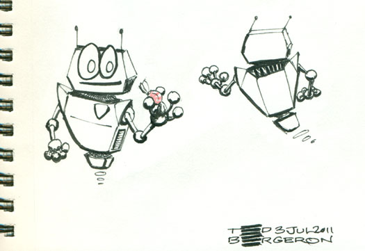
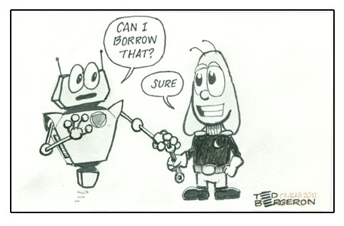
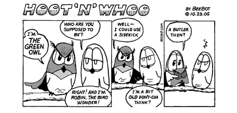
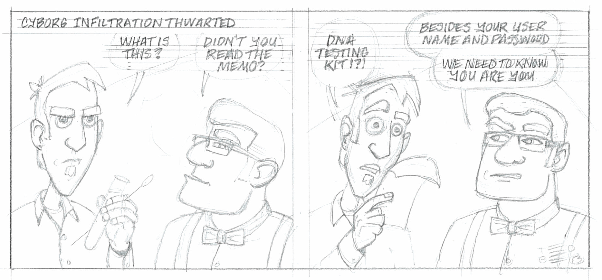
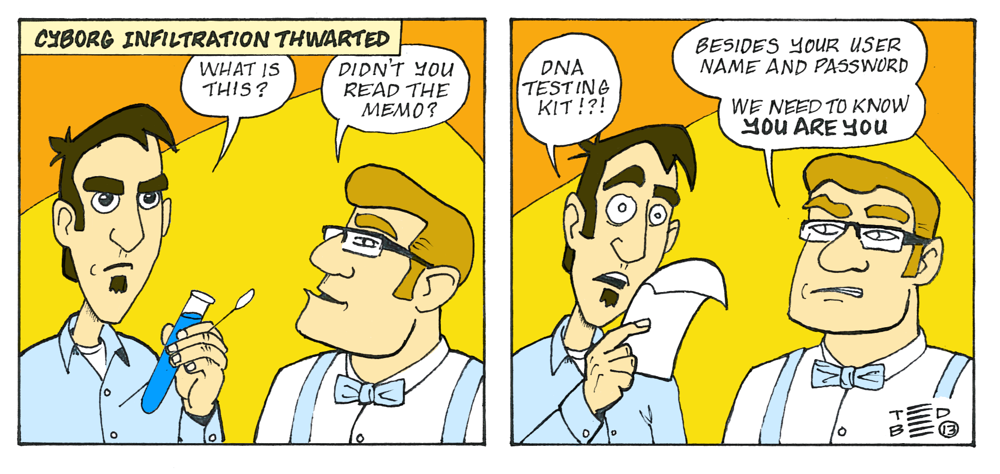
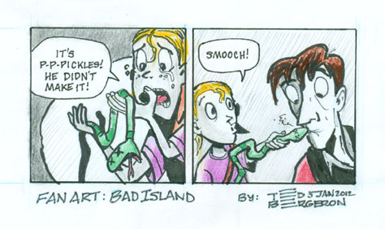
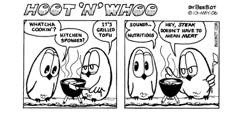

Demo using your arm, pivot at elbow to draw straight lineswith Ted Bergeron

A one hour class on making comic strips
We’ll cover how to make a comic strip in three steps.
Story
Art
Sharing
What is your favorite comic strip?
Panels
Word Balloons
Characters

Before you begin work on the art, you need the story.
Theme of your comic strip
Pick a setting and characters
Genre: Comedy, SciFi…
Tip | Not a writer? Collaborate with one. |
For example, let’s focus on a funny comic strip.
Gag comic is most popular
Typically 3-4 panels
Get to the punchline

Use two characters to talk to each other.
Why did the chicken cross the road?
What could you do to make this funny?
To get away from the taco stand.
Is it funny?
Try exaggerating
we see a chicken crossing the road
Dog says: Why did the chicken cross the road?
we see a taco stand
Armadillo says: Duh! and points to the sign
sign says: Special Chicken Tacos
Character Design: What do your characters look like?
Sketch characters

Set Design
What does the scene look like?
Scout locations.
Make some quick thumbnail sketches of your story.
Choosing the moment
Close up, medium shot…
Action shot. Best if characters are doing something.
Funny reaction pose
Typically artists work at twice the printed size on Bristol board.
13" x 4" for original art
4 panels each 3-1/4" wide
3 panels each 26 picas wide
1/4" gutter size
Note | Find 11 x 14 or 11 x 17 at any craft or art store. |
We will work at 1-1/2 times the printed size on copy paper.
Create the container for the comic strip; draw lightly.
9-3/4" wide (leave about 3/4" on each side)
3" tall
Demo using your arm, pivot at elbow to draw straight linesNote | Since we don’t have a ruler, just use your best guess. It doesn’t have to be perfect. |
The top 1/3 is for your words
The bottom 2/3 is for your art.
Typically the character that speaks first is on the left.

Make your letters 1/8" high
Leave 1/16" leading
Tip | Use a lettering guide |
Pencil in the words first, very lightly
Too many words? Go back to the writer
Words should fit nicely inside the balloons. Balloon tail points towards the character’s mouth

Refer to the thumbnails. Draw with a light touch. Get the foundation right, before adding details

Expressions
Poses: have your characters doing something.
Make it darker. Permanent marker, brush or pen
Warning | Make sure you ink doesn’t bleed through and ruin the table. |
Use a clipboard or cardboard under your paper.
Water Colors, Markers: Copic, Colored Pencils

Sharing is the 21st century way to publish
What app do you use to share with friends and family?
MySpace
Friendster
GeoCities
(early turn of the century sites)
Just use your phone to take a picture and
share it on Facebook or Twitter
Tip | You might want to get a flatbed scanner. |
King Features is one of the world’s largest syndicates.
Cover letter with your contact info.
24 daily comic strips
Put 3 or 4 strips per page
A character sheet
Physically mail them to NY, wait 8 - 12 weeks .
Come up with a schedule: M - W - F
Keep 6 weeks ahead
Be faithful to post a comic on schedule

You can do it!
I’ll be around for a while, please stick around and feel free to ask questions. - Ted Bergeron
